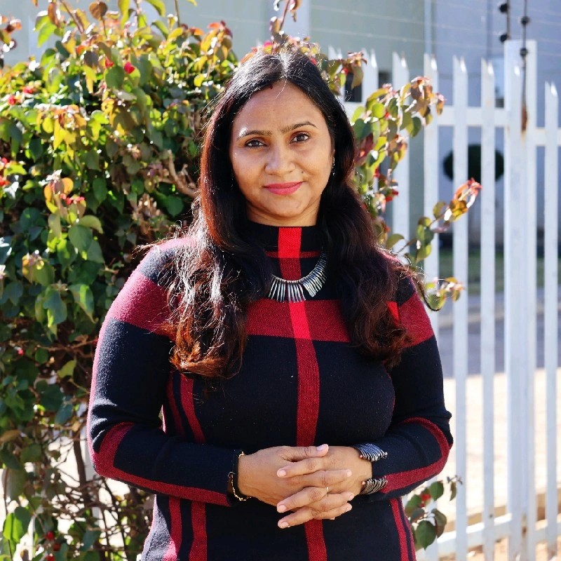

I am a Senior Lecturer and Distance Learning Coordinator at Botho University, Botswana, with over a decade of experience in Open and Distance Learning (ODL), Health Education, and Academic Programme Management. Passionate about integrating digital health technologies and AI-driven learning solutions to enhance educational outcomes across Africa.

I am a senior academic with over 15 years of experience in higher education, health management, and distance learning. Currently serving as a Senior Lecturer and Distance Learning Coordinator at Botho University, Gaborone, Botswana.
My expertise includes academic programme design, e-learning integration, and research in digital health education. I’m passionate about using technology to make education accessible and effective, with a focus on digital transformation in health education and AI-enhanced distance learning ecosystems.
Blackboard, e-Teaching
HIS, EMR, ICD-10/11
Programme Design
Health Literacy, ODL
Curriculum Development
Telehealth, AI
Email:
bblgpt685@gmail.com
babli.kumari@bothouniversity.ac.bw
Phone:
+267 76548326